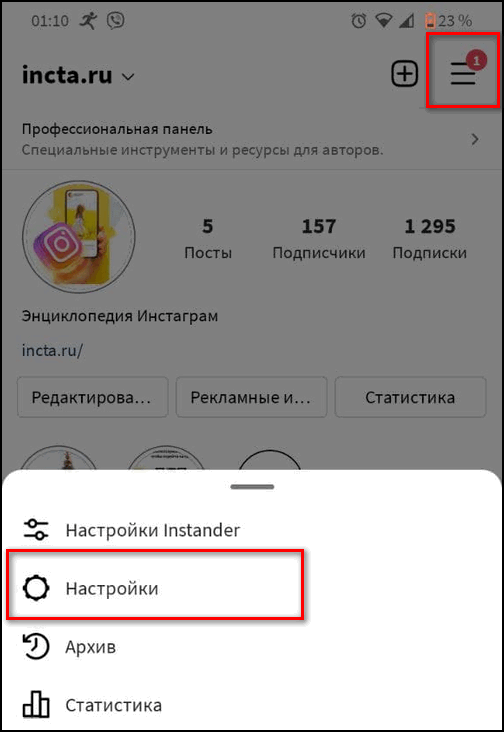
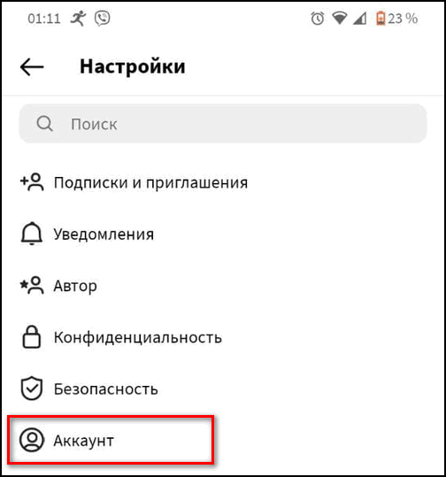
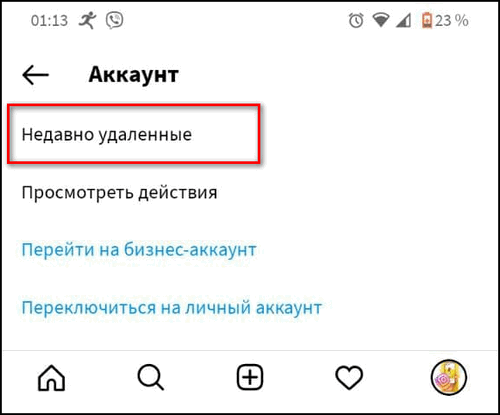
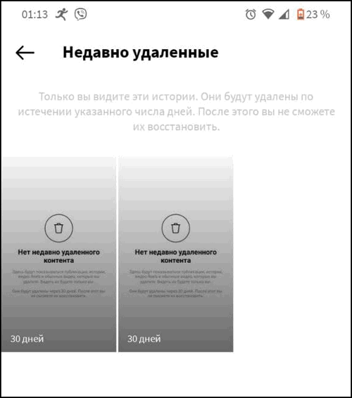
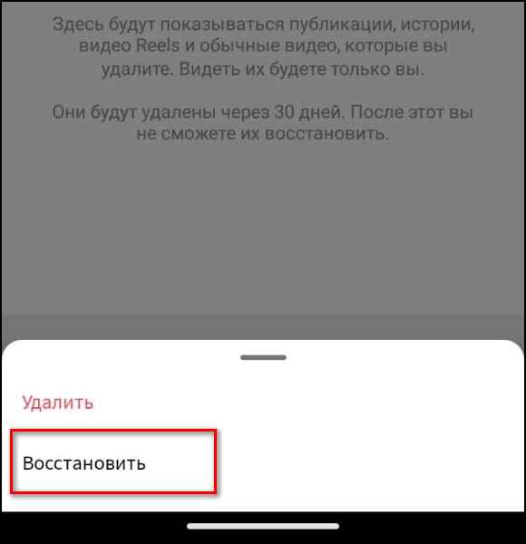
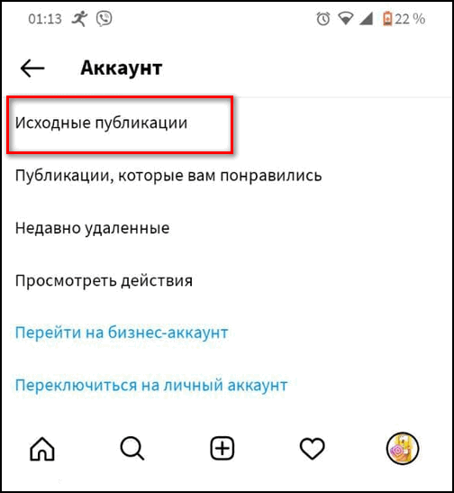
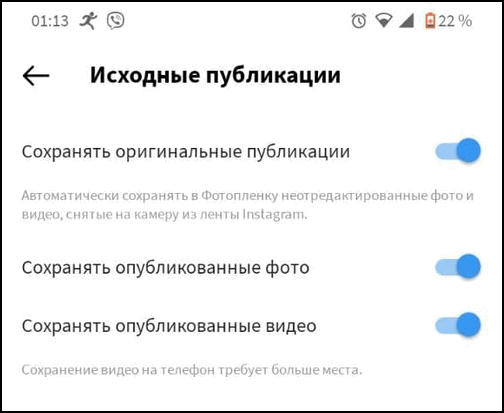
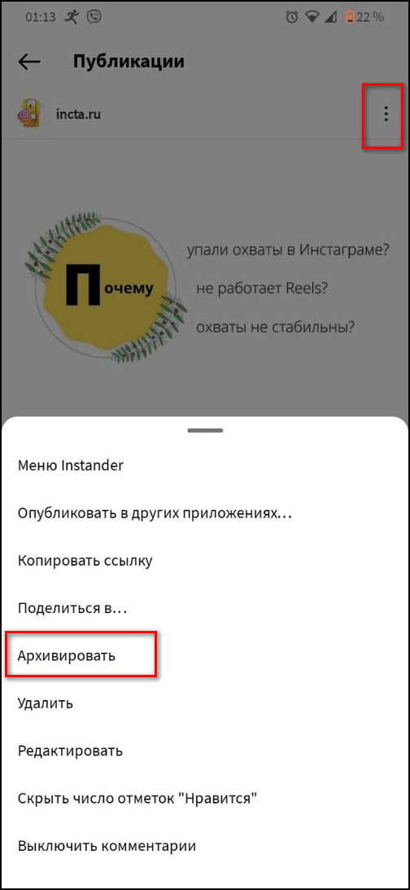
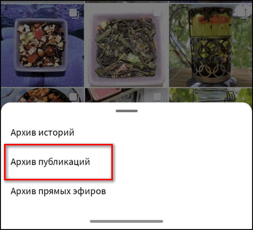
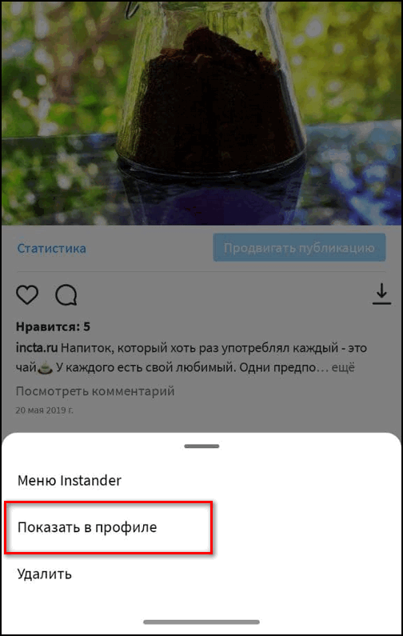

Недавно удаленные в Инстаграме: новый раздел

Недавно удаленные в Инстаграме* – это раздел, который предназначен для просмотра фотографий, которые были удалены пользователем менее 30 дней назад. Владелец профиля может восстановить публикации или же отключить автоматическое сохранение.
Недавно удаленные где найти раздел в Инстаграме*
Вкладка с «Недавно удаленные» недавно появилась в Инстаграме* и доступна с одним из обновлений. Необходима для того, чтобы владелец профиля смог вернуть недавно убранные фотографии, опубликованные в Ленте.
Чтобы воспользоваться разделом, следует:
- Зайти в Инстаграм* – нажать сверху три вертикальные полоски.

- Настройки – Аккаунт.

- Недавно удаленные – появятся фото и видео, которые были добавлены в раздел.

Относительно публикаций – все просто. Достаточно удалить запись, чтобы она появилась в разделе: «Недавно удаленные». Но со Stories есть особенность: есть два типа сохранения материалов, которые хранятся в Архиве.
Как вернуть снимок:
- Зайти в раздел с недавно удаленными фото.

- Нажать по публикации – сверху три точки - Восстановить.

- Подождать, пока запись появится в профиле.
В социальной сети комментируют добавление новой опции, как «защита от взлома». Случается, что злоумышленники удаляют весь контент со страницы, получив доступ. Владелец учетной записи сможет восстановить материалы и скачать их при необходимости.
Как отключить временное хранение файлов
Недавно удаленные фото в Инстаграме* встроена как стандартная функция и отключить полностью раздел не получится. Информация хранится в памяти смартфона и на серверах. Это значит, что если владелец профиля случайно уберет одно или несколько фото, и после очистит временные данные – фотографии все равно можно восстановить. Как убрать снимки из недавно удаленных:
- Зайти в раздел: «Настройки» - Аккаунт.
- Недавно удаленные – выбрать фото.
- Нажать по трем точкам сверху – Удалить.
После этого фотография будет удалена навсегда. Если владелец страницы ранее установил «Сохранение копии», то при размещении фотографии будет создан дубликат, который находится в Галерее устройства.
Другие способы как восстановить снимки
Помимо того, что в Инстаграме* появилась функция восстановления недавно удаленных, также есть возможность вернуть материалы через Архив, хранение файлов в облачном хранилище. Варианты, как восстановить фото:
- создание копий. Если владелец страницы предпочитает создавать контент через «Камеру» (а не заранее созданные снимки в Галерее), то копия фотографии будет отправлена в память смартфона;
- установить в Сторис: хранение дубликатов;
- использовать облачное хранилище. Любой сервис, который установлен на смартфоне;
- переносить материалы в Архив.
Чтобы настроить создание дубликатов:
- Перейти в Настройки – Аккаунт.

- Исходные публикации – Сохранять опубликованные фото.

Или, если необходимо дополнительно сохранять Сторис – использовать сверху значок «шестеренки». Там же есть функция, которая помогает в создании копий и отправляет фото/видео в Галерею устройства.Перенести в Архив
Один из способов, как скрыть фотографии и оставить их для восстановления – воспользоваться Архивом. В этом разделе можно сохранять не только фотографии и видео из Ленты, но и Истории. Воспользоваться Архивом:
- Перейти к публикации в Инстаграме* – нажать сверху три точки.
- Архивировать – подтвердить.

Далее, чтобы вернуть медиаконтент:
- Нажать по трем полоскам – Архив.
- Сверху появится подкатегория: «Лента» или «История».
- Выбрать публикацию, которую нужно вернуть.

- Нажать: «Показать в профиле».

Запись будет добавлена по той дате, когда и была опубликована впервые. Таким способом можно перемещать посты и подвигать те, которые стоят первыми.
Особенности недавно удаленных файлов в Инстаграме*
На Айфоне и Андроиде одинаковая система хранения файлов, но она отличается по типу контента. В списке «Недавно удаленные» после первого обновления нельзя было восстановить Истории. С последующими появились особенности, которые влияют на длительность хранения.
Особенности раздела: «Недавно удаленные»:
- если в настройках отключено «Сохранить в Архив», то Историю можно восстановить только в течение первых 24-х часов;
- подключив сохранение в Архиве – можно восставить фото в течение 30 дней;
- под каждой фотокарточкой расположен таймер, который показывает сколько дней осталось до удаления;
- можно сохранять только Истории и публикации. Функция пока недоступна для IGTV, но есть вероятность, что в скором времени она станет доступна и там.
После первого удаления публикации на экране появится уведомление, где будут описаны функции «Удаленные недавно». Владелец страницы сможет перейти к настройкам и посмотреть, какие материалы сохраняются.
Если функция не появилась – нужно проверить текущие обновления в Play Market или AppStore. Функция с «Недавно удаленными» появилась в версии 214.1.0.29.120.